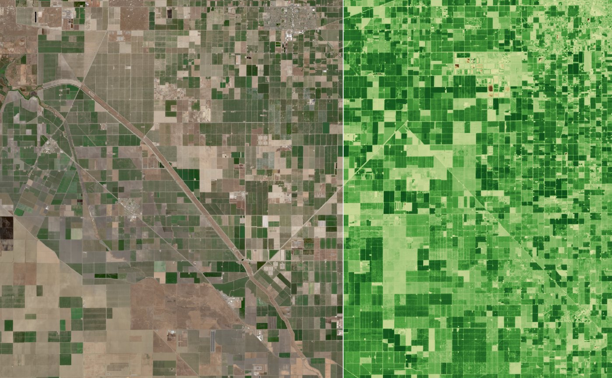

TerraScope
A browser app that turns raw Sentinel-2 satellite measurements into a timelapse you can play: search a place, press Play, and watch the ground change, in natural colour or as plant health, with cloudy days removed automatically.
Features
01Explore map
Sentinel-2 cloudless basemap with labels, free pan and zoom up to 14, where one screen pixel ≈ one 10 m satellite pixel.
02Place search
Suggestions as you type (Photon, OpenStreetMap). Enter zooms to fit the place.
03One-button timelapse
Play finds every date for the view, locks it, and loads one processed frame per date.
04Science frames
Calibrated reflectance and masks, sent as numbers. The GPU colours them: natural, false colour, NDVI.
05Granule mosaic
Views where granules meet are stitched from the same satellite pass, pixel by pixel.
06Cloud removal
Each frame's own cloud mask measures the view. Frames over 30% cloudy are removed; one click restores.
07Player
Play, scrub, speed, loop, keyboard. Click any date segment to remove it.
08Long ranges
Years of dates searched month by month in parallel, thinned to 60 frames, clearest per time slot.
09Visible progress
Bars for frames loaded and for live requests: server time, then bytes.
The browser shows numbers; a service next to the data makes them
What I chose, and what I didn't
| Decision | Rejected | Why |
|---|---|---|
| Server reads COGs with GDAL | Reading COGs in the browser | One trusted place for hosts, reprojection, calibration and masks; results cached for everyone |
| Send reflectance numbers | Send coloured PNGs | Instant layer switching, real pixel values, and cloud % measured in the view |
| One frame per date | ~20 map tiles per date | One read per band per date instead of twenty; easy to cache and replay |
| Stitch same-pass granules | Use only the centre granule | Views where granules meet were mostly empty; same pass = same moment, so it's honest |
| Judge coverage by real outline | Scene bounding box | At a swath edge, data fills only a diagonal slice of the box |
| Cloud % from the frame's mask | Catalog cloud % | Catalog covers a 110 km granule: 31% said, 47.5% in the view |
| Search month by month, in parallel | One long paged list | The long list silently cut off the newest months |
| DOM basemap | Draw basemap on the GPU | It's just pictures; works even when WebGPU doesn't |
Why the first image was slow: round trips, not code
Stitch the same pass, and skip what the satellite didn't see
Pick by time slot, then check each frame's own clouds
One frame: 26 bytes per pixel, numbers not colours
clear mask (not cloud, shadow or cirrus) is what measures clouds per view.Every fix started with a measurement
Cold frame
39–49 s → 2.2–7.0 s: one read per date, bands in parallel, the right overview level.
Fewer bytes
2.8 → 1.2 MB per band on wide views by allowing a copy up to 2× coarser.
Replay
17-date timelapse from the disk cache; 97 s the first time.
Six months, complete
Was 25 s and cut off at 3 June; now month by month, in parallel.
Clouds measured, not guessed
The catalog said 59%; the view's own mask said 85%, so it's removed.
Of the view in every frame
Granule mosaic plus outline-based coverage: half-imaged dates are skipped.
Next: run the service in AWS Oregon next to the data (most of today's wait is network), show the 41 KB scene thumbnail while the first frame loads, refill cloudy time slots with the next clearest date, catalogue scenes in PostGIS, and switch frames to 16-bit reflectance to halve their size.